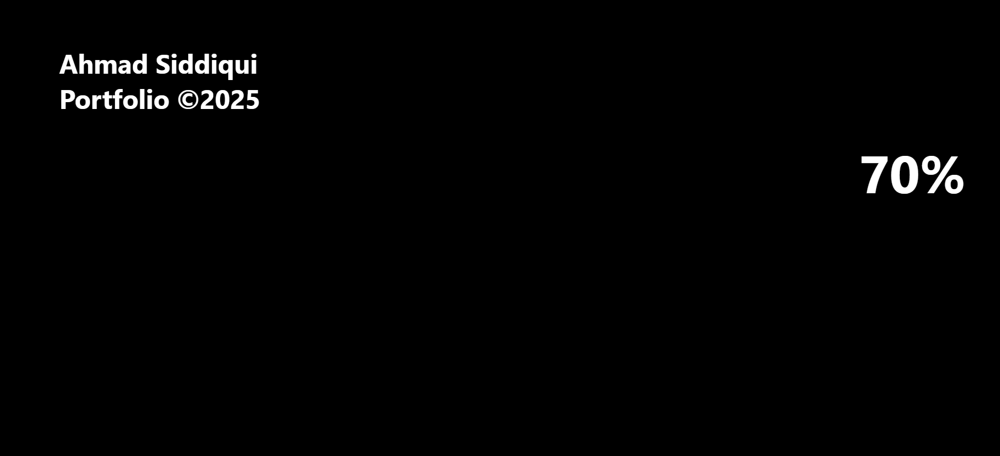
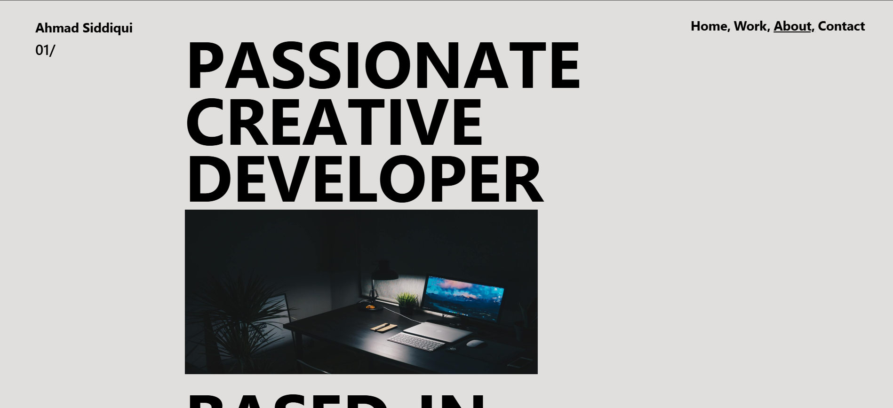
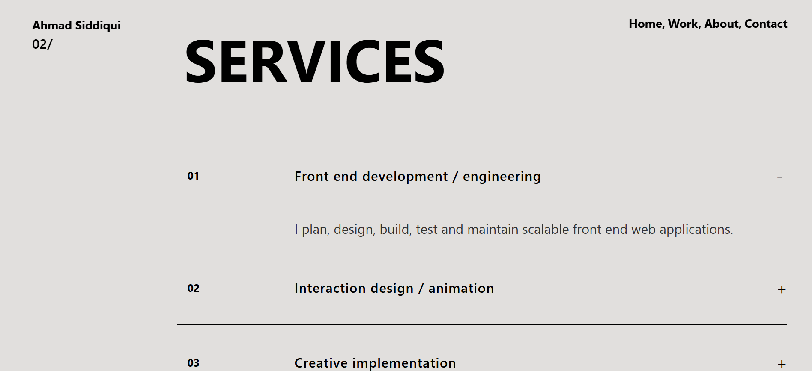
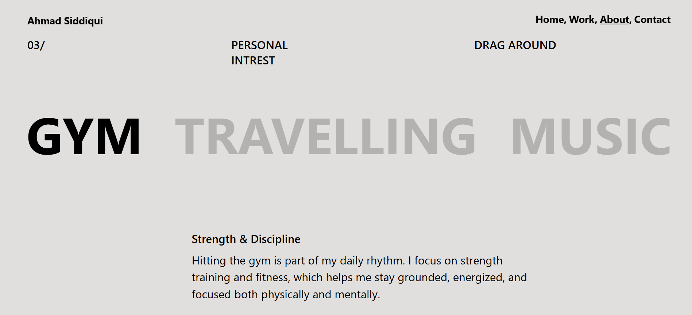
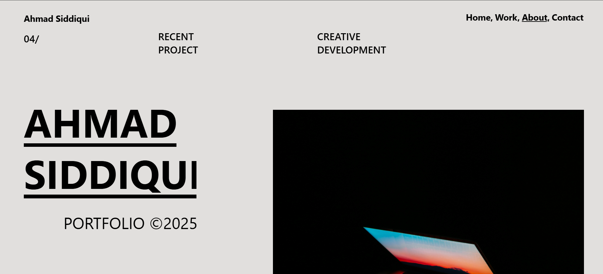
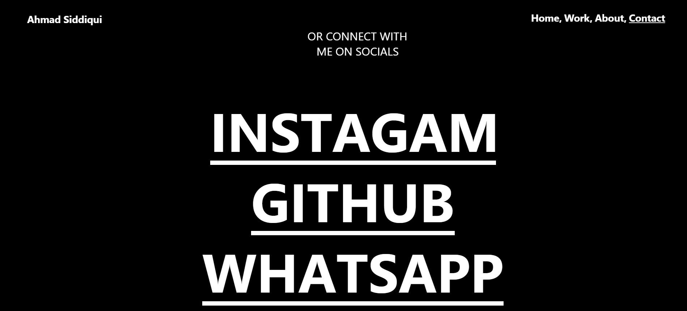

The site features interactive sections such as
project galleries, a smooth scroll experience,
and tab-based content transitions.
JavaScript handles the dynamic behavior
and enhances user experience, while
CSS ensures modern styling and layout
consistency across devices.
PROJECT INFO
Role Design & Development
Year 2025





